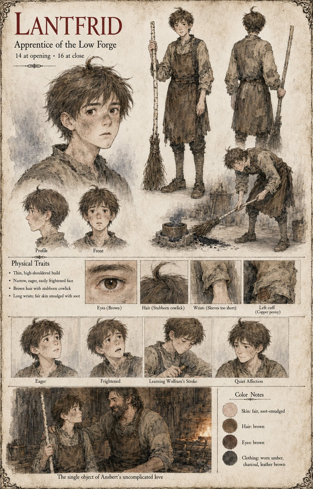

Lantfrid
Apprentice of the Low Forge · 14 at the opening, 16 at the close
The apprentice of the Low Forge: a thin, high-shouldered boy with a narrow, eager, easily frightened face, brown hair with a stubborn cowlick, long wrists coming out of sleeves too short and fair skin smudged with soot. The other pages give him four moments. His besom sweeps the black powder off the anvil and into the crucible, and the blade that comes out rings like a bell (Ansbert). He opens the door of the forge to Wolfram on the night of the rain, and in the war teaches the struck master the sweep: the elbow, the slant, the bristles trailing. And on the Uncounted night, when the ox Brun groans as the Duke's guards take him by the arms (Gerold), he runs for the bridge.
Brun's page has Higaide bow to the boy and then to the ox, the cold hearth and the anvil, and later carry the boy's body up the steep lanes of the Middle Town, with Hiltrude's words at his side, Feed the ox; Wolfram's page leaves a space at the end of the anvil at the burying, on the left, where a long thin hand with a cowlick over it would have been. A copper penny in his left sleeve, kept through the war and returned by Hiltrude to Higaide on the Uncounted Day, is on Waldrada's Nephew's page the coin Higaide gave the other boy for the news of a sermon; the manuscript does not say how it passed from one boy to the other, and the sheet draws it at his left cuff. The Sentry at the River-Gate lets “the boy from the forge” pass at night and the Young Levy Archer looses at a running figure on a bridge; neither sheet names the boy, and this page does not say that either is Lantfrid.
The sheet draws him with a birch besom taller than himself, and bent over a hearth sweeping coals; its last scene, The single object of Ansbert's uncomplicated love, has the smith, bearded and smiling, lay an arm across his shoulders in the forge-light. Its expression panels run Eager, Frightened, Learning Wolfram's Stroke, with a small hammer in his hands, and Quiet Affection; Wolfram's page has the boy teach the sweep, and the page does not say that the teaching ran one way only. Written from the sheet, from what the other Case 4181 pages already say, and from the character notes in the case's publication-prep file; the manuscript itself was not to hand. His ages of 14 at the opening and 16 at the close, thin high-shouldered build, brown eyes and worn umber, charcoal and leather-brown clothes are the sheet's own.
“The single object of Ansbert's uncomplicated love”
Appears In

Related Subjects


Related Records

In the fog of the Hohlweg, Tomobe no Higaide bows from the waist with his hands flat on his thighs to the ox Brun, who lowers his great head until his wet nose is a hand's breadth from the stranger's chest and breathes out into his tunic; the cart-boy, presumably Lantfrid, watches open-mouthed.

The powder goes into the crucible by accident: Lantfrid, frozen mid-stroke, has swept it off the anvil's edge with the besom held under his right elbow, while Ansbert tends the fire with his back turned and Higaide lowers his eyes in tact beside Brun at the treadwheel.

On the Uncounted night the Grey Lances sit in the mud before the Low Forge with their spears grounded, and Hagen Brandt sits on the threshold with two swords laid beside him, hilts to the road; Higaide stands bareheaded in the doorway with empty hands, bowing, with Lantfrid and the ox Brun behind him. We are nobody's, says the captain, and we are sitting.